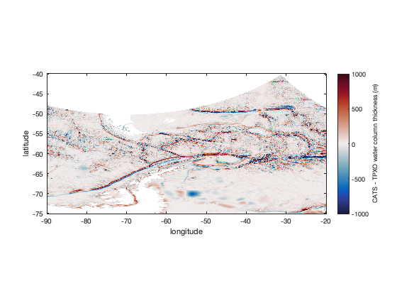
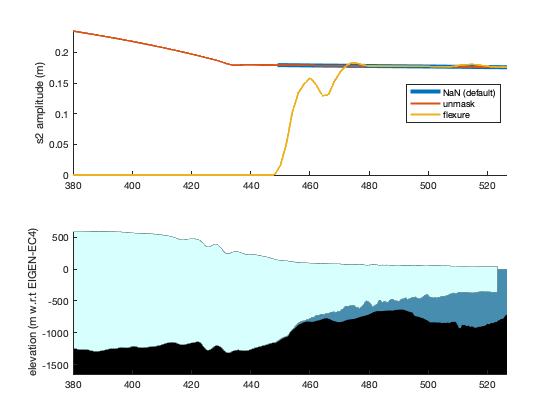

tmd_interp documentation
tmd_interp interpolates tide model data at specified geographic locations.
Back to Tide Model Driver Contents.
Contents
Syntax
zi = tmd_interp(filename,variable,lati,loni) zi = tmd_interp(...,'constituents',conList) zi = tmd_interp(...,'coasts',MaskingMethod)
Description
zi = tmd_interp(filename,variable,lati,loni) uses the NetCDF tide model specified by filename to interpolate a specified variable at the geographic coordinates lati,loni. The variable can be:
- 'h' complex tidal height (m)
- 'hRe' real part of tidal height
- 'hIm' imaginary part of tidal height
- 'hAm' amplitude of tidal height
- 'hPh' phase of tidal height (radians)
- 'u' complex zonal velocity (m/s)
- 'uRe' real part of zonal velocity
- 'uIm' imaginary part of zonal velocity
- 'uAm' amplitude of zonal velocity
- 'uPh' phase of zonal velocity (radians)
- 'U' complex zonal transport (m^2/s)
- 'URe' real part of zonal transport
- 'UIm' imaginary part of zonal transport
- 'UAm' amplitude of zonal transport
- 'UPh' phase of zonal transport (radians)
- 'v' complex meridional velocity (m/s)
- 'vRe' real part of meridional velocity
- 'vIm' imaginary part of meridional velocity
- 'vAm' amplitude of meridional velocity
- 'vPh' phase of meridional velocity (radians)
- 'V' complex meridional transport (m^2/s)
- 'VRe' real part of meridional transport
- 'VIm' imaginary part of meridional transport
- 'VAm' amplitude of meridional transport
- 'VPh' phase of meridional transport (radians)
- 'wct' water column thickness (m)
- 'mask' binary land/ocean mask
- 'flexure' ice shelf flexure coefficient from a linear elastic model applied to BedMachine ice thickness (can slightly exceed 1). Only for CATS model.
zi = tmd_interp(...,'constituents',conList) specifies tidal constituents as a cell array (e.g, {'m2','s2'}). If constituents are not specified, all constituents from the model are returned.
zi = tmd_interp(...,'coasts',MaskingMethod) specifies how coastal regions are masked. Can be NaN, 'flexure', or 'unmask'. By default, MaskingMethod is NaN, meaning outputs are set to NaN wherever a nearest-neighbor interpolation of the ocean indicates land. The 'flexure' option scales tidal constituents by a predicted coefficient of tidal deflection for ice shelf grounding zones. A third option, 'unmask', does not apply any masking, which may be preferred close to coasts, where, for example, a tide gauge may exist between land and ocean grid cells. The 'unmask' option is available for height only.
Example: Global Model
The tmd_interp function loads data from any TMD3.0 compatible tide model data file. Here's how you may get the water column thickness and an ocean mask corresponding to the TPXO_atlas_v5 global tide model file.
We'll also get the M2 constituent amplitude and overlay it in 0.5 m contours.
A minor note: The model file is published on a 1/30 degree grid, so below we're doing a proper job of interpolating to 1/100 degree grid, to prevent aliasing:
% Define a 1/100 degree lat,lon grid: lon = -90:0.01:-20; lat = -40:-0.01:-75; [Lon,Lat] = meshgrid(lon,lat); % Get water column thickness and ocean mask corresponding to the grid: Z_tpxo = tmd_interp('TPXO9_atlas_v5.nc','wct',Lat,Lon); ocean = tmd_interp('TPXO9_atlas_v5.nc','mask',Lat,Lon); % Get the M2 constituent amplitude: m2 = tmd_interp('TPXO9_atlas_v5.nc','hAm',Lat,Lon,'constituent','m2'); figure h = imagesc(lon,lat,Z_tpxo); h.AlphaData = ocean; % makes land transparent set(gca,'color',0.4*[1 1 1]) % makes transparent areas appear gray axis xy image hold on contour(lon,lat,m2,0:0.5:4,'r') % M2 amplitude contours xlabel 'longitude' ylabel 'latitude' caxis([0 6000]) cb = colorbar; ylabel(cb,'water column thickness (m)') cmocean deep % optional colormap

Example: Regional Model
The tmd_interp function works exactly the same for regional models as it does for global models. Just enter the geographic coordinates, and it'll give you the data you request.
Here we compare the bathymetry in the updated CATS2008 model to the bathymetry we obtained in the previous example:
Z_cats = tmd_interp('CATS2008_v2023.nc','wct',Lat,Lon); figure h = imagesc(lon,lat,Z_cats-Z_tpxo); h.AlphaData = ocean & isfinite(Z_cats); set(gca,'color',0.4*[1 1 1]) % makes transparent areas gray axis xy image xlabel 'longitude' ylabel 'latitude' caxis([-1 1]*1000) cb = colorbar; ylabel(cb,'CATS - TPXO water column thickness (m)') cmocean balance % optional colormap
The curving areas of missing data at the top of the figure above indicate regions outside the CATS2008 model domain. In CATS model space, that's a straight line, but in unprojected coordinates, it curves.
Example: Multiple constituents
Perhaps you want all of the complex coefficients of all of the tidal constituents at some locations. Here are the complex tidal height coefficients for a location near Florida, and another location near Maine:
% Locations near Florida and Maine: lat = [28.7 42.1]; lon = [-79.6 -67.6]; % Get the complex tide coefficients: hc = tmd_interp('TPXO9_atlas_v5.nc','h',lat,lon); % Describe the size and type of these variables: whos lat lon hc
Name Size Bytes Class Attributes hc 1x2x15 480 double complex lat 1x2 16 double lon 1x2 16 double
Above we see lat and lon are both 1x2, while hc is 1x2x15, meaning 15 constituents at each geographic location.
Example: Ice shelf flexure
For the updated CATS2008 model, we've attempted to model the ice shelf using a simple 1d linear elastic forward model applied to BedMachine ice thickness, with an elastic modulus E=4.8 Gpa and Poisson's ratio nu=0.4.
This example uses Antarctic Mapping Tools with the BedMachine and ITS_LIVE plugins. (Sorry about all of the extra dependencies, but I think the context is important to aid in understanding, even if it's not worth downloading all the extras to replicate the example on your own.)
In this example, we calculate an ice flowline starting from a seed location on Pine Island Glacier, then calculate the s2 constituent amplitude along the flowline. This constituent has a wavelength that's much larger than Pine Island Ice Shelf, so we expect it to be relatively constant along the entire ice shelf.
% Flowline from a seed location on Pine Island Glacier: [lati,loni] = itslive_flowline(-75.34,-98.23); di = pathdistps(lati,loni,'km'); % distance along flowline % Get the s2 tidal amplitudes along the flowline: fn = 'CATS2008_v2023.nc'; s2_default = tmd_interp(fn,'hAm',lati,loni,'constituents','s2'); s2_unmask = tmd_interp(fn,'hAm',lati,loni,'constituents','s2','coasts','unmask'); s2_flexure = tmd_interp(fn,'hAm',lati,loni,'constituents','s2','coasts','flexure'); % Plot s2 constituent amplitudes: figure subplot(2,1,1) plot(di,s2_default,'linewidth',4) hold on plot(di,s2_unmask,'linewidth',2) plot(di,s2_flexure,'linewidth',2) box off axis tight ylabel 's2 amplitude (m)' xlim([380 max(di)]) legend('NaN (default)','unmask','flexure','location','best') % Plot a BedMachine profile for context: subplot(2,1,2) bedmachine_profile(lati,loni,'horiz',di) xlim([380 max(di)])
Above, you see that by default tmd_interp returns the full amplitude along the floating ice shelf, and NaN where the ice is grounded.
The 'unmask' option exists to allow interpolation where the default behavior produces NaNs. This is mainly for cases where a point of interest, like a tide gauge, may lie just slightly landward of valid ocean model data. Above, you see that the unmasked data is pretty smooth up to about 15 km inland of the ocean boundary, which is reasonable for any interpolation close to the coast.
The third option 'flexure' attempts to model ice flexure based on a simple 1D forward elastic model. It says that grounded ice has 0 tidal motion, while fully hydostatic ice experiences the full range of tidal motion. The transition from 0 amplitude to full amplitude is fairly smooth, but dips down slightly along the way, as this particular flowline passes next to a bathymetric pinning point in the middle of the ice shelf. You may also notice the flexure model goes just a few percent above neutral near the hydrostatic line, and this represents true ice behavior.
Author Info
The tmd_interp function and its documentation were written by Chad A. Greene, June 2022.